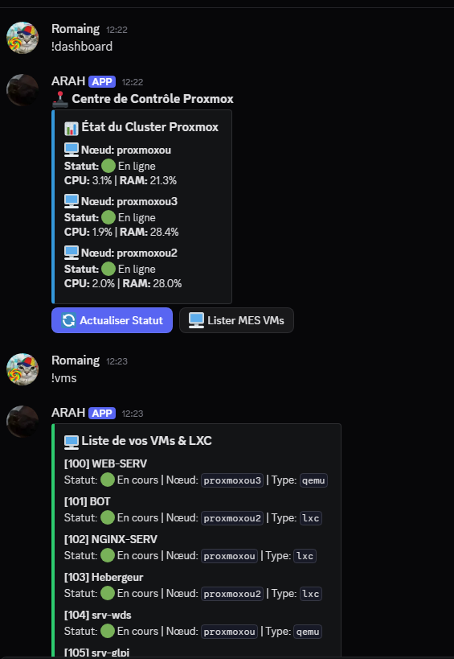
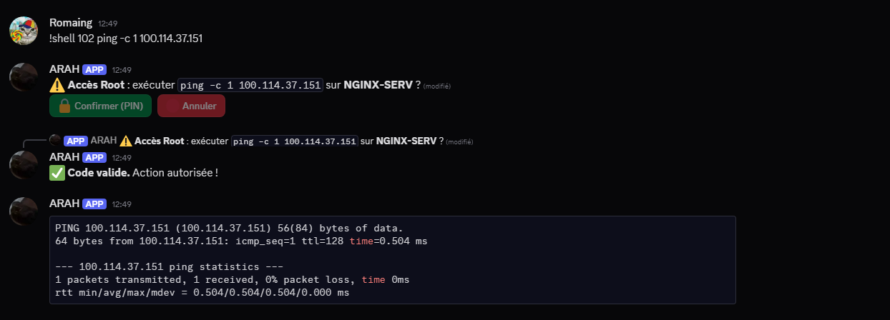
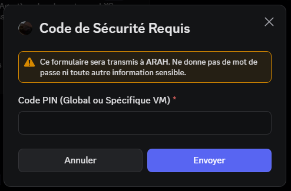

Développement complet d'un bot d'administration système en Python.
Création d'une interface utilisateur riche (UI) directement dans Discord utilisant les Embeds, les boutons interactifs et les menus déroulants. Permet de visualiser l'état du cluster Proxmox (RAM, CPU) et l'état des machines virtuelles en temps réel.

Le bot permet d'exécuter des commandes shell directement sur les conteneurs LXC et les VM QEMU de l'infrastructure. Ce mécanisme complexe utilise Paramiko (SSH) pour les LXC et l'agent QEMU Guest Agent pour contourner les limitations réseaux. Les résultats trop longs sont formatés et renvoyés sous forme de fichiers `.txt` téléchargeables.

Implémentation d'un système de sécurité strict. L'exécution de commandes sensibles nécessite la saisie d'un Code PIN (Master ou dédié à une VM spécifique) via une modale sécurisée de Discord. Le système de permission repose sur des fichiers JSON gérant les locataires ("Guest") et leurs accès granulaires.

Le bot intègre une fonction d'auto-mise à jour (!update). Lorsqu'elle est déclenchée, le bot exécute un git pull sur son propre dépôt pour récupérer les dernières modifications de code, puis redémarre son propre processus Python silencieusement pour appliquer le patch, minimisant ainsi le temps d'indisponibilité (MCO).